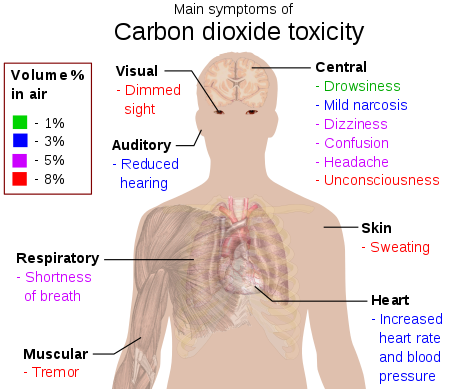

CO2 , most commonly known as Carbon Dioxide, is composed of two oxygen atoms covalently bonded to a single carbon atom. We exhale it and it is utulized by plants during photosynthesis. We exhale it and is utulized by plants during photosynthesis. it is created by the combustion of fossil fuels.
Carbon dioxide emissions impact human health by displacing oxygen in the atmosphere. Breathing becomes more difficult as carbon dioxide levels rise. In closed areas, high levels of carbon dioxide can lead to health complaints such as headaches.
Hypercapnia, also known as hypercarbia and CO2 retention, is a condition of abnormally elevated carbon dioxide (CO2) levels in the blood. Carbon dioxide is a gaseous product of the body's metabolism and is normally expelled through the lungs. Hypercapnia normally triggers a reflex which increases breathing and access to oxygen (O2), such as arousal and turning the head during sleep. A failure of this reflex can be fatal, for example as a contributory factor in sudden infant death syndrome.